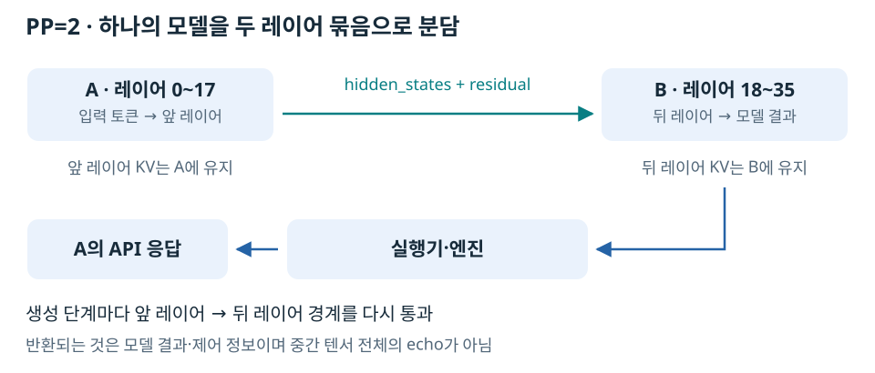

Pipeline Parallel(PP)은 모델의 연속된 레이어 묶음을 서로 다른 GPU에 배치하는 방식이다. 다음 레이어를 계산하려면 앞 레이어의 출력이 필요하므로, 단계 경계에서 중간 텐서를 전달한다.
검증 구성: 36개 레이어를 18개씩 분담
Qwen3-8B를 TP=1·PP=2로 실행했다. A는 API를 받는 쪽, B는 별도 공개 API 없이 참여하는 headless 워커 쪽이다. 두 개의 독립된 전체 모델 서버가 아니라 하나의 모델 실행에 참여하는 두 단계다.

0,18)은 0을 포함하고 18은 제외한다. 실제 워커에서 관찰한 로그는 다음과 같다.
Rank 0: start_layer=0, end_layer_exclusive=18, first_stage=true
Rank 1: start_layer=18, end_layer_exclusive=36, last_stage=true
[A PP 로그 (로컬 보존 자료: research/distributed_runtime_cross_node_transport/runs/archive-a/full-20261010/pp.log), B PP 로그 (로컬 보존 자료: research/distributed_runtime_cross_node_transport/runs/archive-b/full-20261010/pp.log), 관찰용 워커 코드 (로컬 보존 자료: research/distributed_runtime_cross_node_transport/experiments/lab_worker.py)에 원본이 있다.
넘기는 것은 전체 KV가 아니라 중간 계산값이다
hidden_states는 토큰들이 현재 레이어까지 통과하며 갱신된 벡터다. residual은 Residual Connection, 즉 잔차 연결에서 이전 값을 더하는 계산을 이어가기 위해 이 구현이 함께 전달하는 텐서다.
각 단계의 KV는 그 단계가 맡은 레이어에 남는다. A의 모든 KV를 B로 옮겨서 Decode를 인계하는 P/D와 다르다.
| 관찰한 forward의 토큰 수 | 텐서 하나의 모양 | BF16 텐서 하나 | hidden + residual 합계 |
|---|---|---|---|
| 128 | [128, 4096] |
1 MiB | 2 MiB |
| 1 | [1, 4096] |
8 KiB | 16 KiB |
128토큰 행렬은 128 × 4096 × 2 bytes = 1,048,576 bytes다. 두 텐서가 있으므로 합계 2 MiB다. 이는 텐서 payload 합계이며 통신 메타데이터·프로토콜 헤더까지 합친 NIC 바이트가 아니다.
B의 수신 로그에 [524288]처럼 평평한 버퍼가 보여도 128 × 4096과 원소 수가 같다. 전송 버퍼 표현과 모델에 전달하는 텐서 모양이 다를 수 있다. 토큰이 사라졌다는 뜻은 아니다.
Decode에서도 레이어 경계를 계속 지난다
새 토큰 하나를 처리할 때도 앞 레이어 → 뒤 레이어가 필요하다. 따라서 PP는 Prefill 시 한 번 통신하고 끝나는 구조가 아니다. 작은 중간값이라도 반복 전달·동기화 지연이 누적될 수 있다.
다만 이 trace는 초기 12개 호출만 기록했고 예열도 포함한다. 실제 완료 시간을 재는 profiler가 아니라 호출 시점의 텐서 종류·크기 관찰이다. 이를 모든 요청의 전송 횟수·누적 네트워크 시간으로 확장하지 않는다.
B에서 만든 결과는 어떻게 A의 API로 돌아오는가
보존된 GPU worker 소스 (로컬 보존 자료: research/distributed_runtime_cross_node_transport/runs/archive-a/full-20261010/source/v1/worker/gpu_worker.py)에서는 첫 단계가 아닌 워커가 중간 텐서를 받고, 마지막 단계가 아닌 워커가 output.tensors를 다음 단계로 보낸다.
MultiprocExecutor 소스 (로컬 보존 자료: research/distributed_runtime_cross_node_transport/runs/archive-a/full-20261010/source/v1/executor/multiproc_executor.py)는 출력 워커의 결과를 응답 큐를 통해 엔진 쪽으로 전달한다. 따라서 B에서 마지막 계산을 하더라도 A의 HTTP API가 클라이언트에게 결과를 반환할 수 있다. 앞 단계의 중간 텐서 전체를 그대로 되돌려 보내야 하는 구조는 아니다.
다음 토큰의 처리를 위해 토큰·실행 제어 정보가 다시 전달될 수 있다. 그러므로 실제 모델이 완전히 편도 통신만 한다고도 할 수 없다. 다만 왕복 벤치마크처럼 payload 전체를 그대로 echo하는 것은 측정 장치이지 모델의 일반 동작이 아니다.
실제 응답 결과
출력 32토큰·동시 요청 1개, 길이별 예열 1회·측정 3회의 평균이다.
| 입력 토큰 | TTFT | E2E | 클라이언트 TPOT 추정 |
|---|---|---|---|
| 128 | 171.2 ms | 1.143 s | 31.4 ms |
| 673 | 995.9 ms | 1.973 s | 31.5 ms |
| 2048 | 3052.3 ms | 4.040 s | 31.9 ms |
모든 측정 요청이 32토큰을 생성하고 length로 종료했다. PP 요약 원본 (로컬 보존 자료: research/distributed_runtime_cross_node_transport/runs/archive-a/full-20261010/pp-requests/summary.json). 한 요청의 앞뒤 레이어는 의존 관계가 있으므로 GPU 두 장으로 나눠도 자동으로 지연이 절반이 되지 않는다. 여러 요청을 겹칠 때의 처리량은 이 표로 검증하지 않았다.